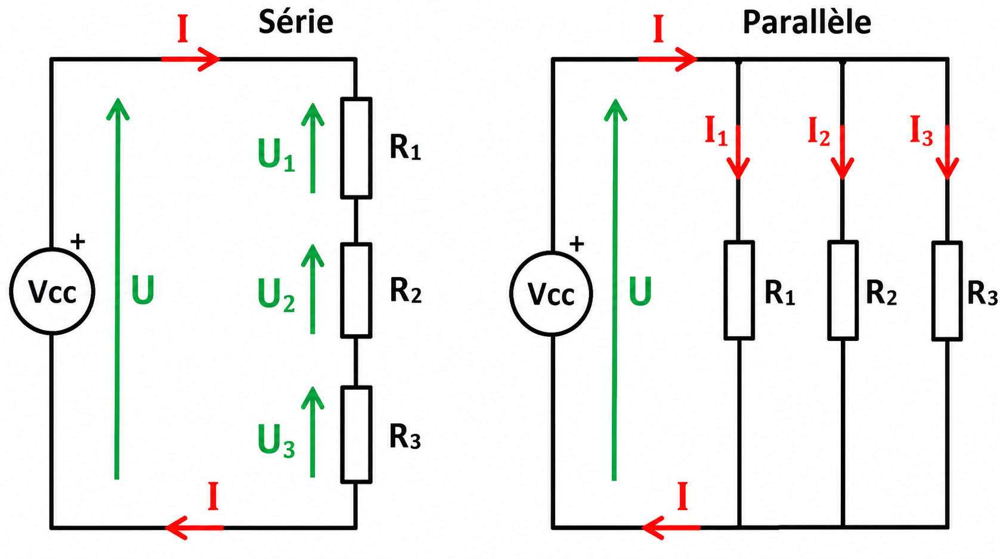
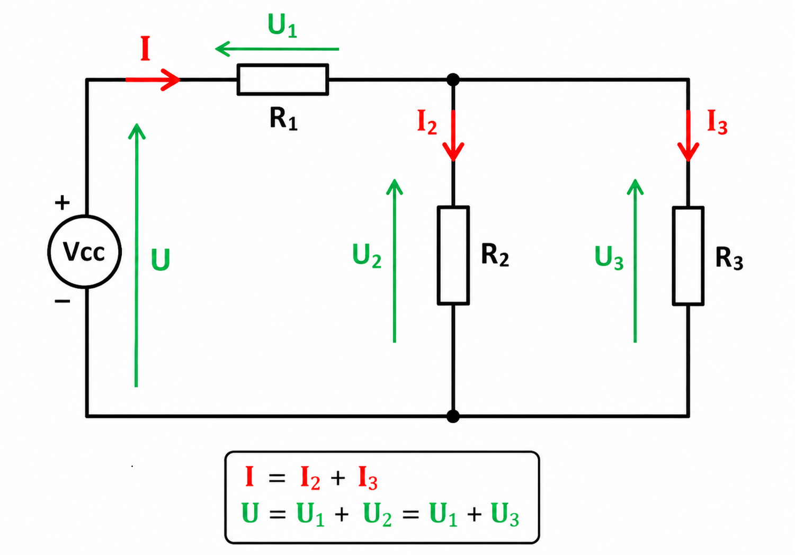

Maîtriser les associations de résistances et calculer la résistance équivalente d'un circuit.
🔍 Situation problème
Les montages électroniques utilisent très souvent plusieurs résistances.
Comment peut-on remplacer plusieurs résistances par une seule résistance équivalente afin de simplifier les calculs ?

1. Rappel rapide
Loi d'Ohm
Puissance électrique
1 à 2 exercices rapides
2. Résistances en série
Lorsque plusieurs résistances sont montées en série, leurs valeurs s'additionnent.
Req = R1 + R2 + ... + Rn
Exercices
330 Ω + 470 Ω → Calculer Req
100 Ω + 220 Ω + 470 Ω → Calculer Req
Avec U = 9 V, calculer le courant du circuit.
3. Résistances en parallèle
Pour un montage en parallèle, on additionne les inverses.
1 / Req = 1/R1 + 1/R2 + ... + 1/Rn
Cas particulier de deux résistances :
Req = (R1 × R2) / (R1 + R2)
Exercices
330 Ω et 330 Ω
330 Ω et 660 Ω
220 Ω, 470 Ω et 1 kΩ
Avec U = 9 V, calculer Itotal puis I1 et I2.
4. Cas mixte série – parallèle
Schéma :
R1 en série avec (R2 // R3)

Étapes
Calcul
Réduire le parallèle
Ajouter la résistance série
Calculer Itotal
Calculer I2 et I3
📋 Synthèse
En série, les résistances s'additionnent.
En parallèle, on additionne les inverses.
Toujours simplifier le circuit avant d'appliquer la loi d'Ohm.
Terminer par le calcul des courants dans chaque branche.
📌 Formulaire
Req = R1 + R2 + ... + Rn
1/Req = 1/R1 + 1/R2 + ... + 1/Rn
Cas particulier avec 2 résistances : Req = (R1 × R2)/(R1 + R2)